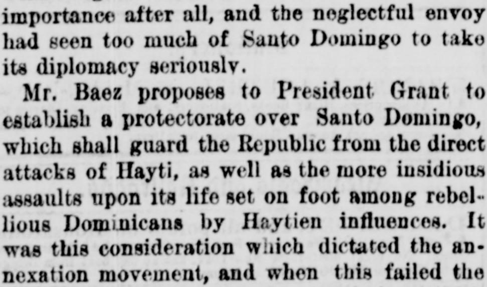
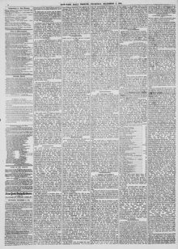

Baez proposes to President Grant to establish a protectorate over SantoBaez propone al presidente Grant establecer un protectorado sobre Santo
New-York Tribune. New York [N.Y.], December 4, 1873. Page 4. Published by New York Tribune. A daily newspaper, 1866–1924.New-York Tribune. New York [N.Y.], 4 de diciembre de 1873. Página 4. Publicado por New York Tribune. Periódico diario, 1866–1924. View the originalVer el original


See the full pageVer la página completaThe New-York Tribune reported that Mr. Báez proposed that President Grant establish a U.S. protectorate over Santo Domingo to guard against attacks and influences from Hayti, having exhausted other resources after the failure of annexation and the Samana Bay enterprise. Báez also forwarded a disavowed treaty between Hayti and Santo Domingo containing a clause against alienating territory to foreign powers, attempting to provoke national jealousy regarding European machinations. President Grant laid the communication before Congress without making any recommendations, and the scheme was deemed unlikely to receive favor from the National Legislature.El New-York Tribune informó que el Sr. Báez propuso al presidente Grant erigir un protectorado estadounidense sobre Santo Domingo para repeler las agresiones e influencias procedentes de Haití, habiendo agotado todos sus recursos tras frustrarse la anexión y la empresa de la Samaná Bay Company. Báez remitió asimismo un desautorizado convenio entre Haití y Santo Domingo provisto de una cláusula prohibitiva de toda cesión territorial a potencias foráneas, en una tentativa de azuzar los celos geopolíticos frente a maquinaciones europeas. El presidente Grant dio traslado de dicha comunicación al Congreso sin formular recomendación alguna, juzgándose improbable que el parlamento dispensase una acogida favorable al proyecto.
FULL TEXT:TEXTO COMPLETO:
New-York Tribune December 4, 18734 de diciembre de 1873
functions as Commercial Agent... have been a more business-like arrangement, certainly, and for the sake of the feelings of the clerks in the Department we share Mr. Fish’s regret. But it is not a matter of much importance after all, and the neglectful envoy had seen too much of Santo Domingo to treat its diplomacy seriously.funciones como Agente Comercial... habría sido un arreglo más propio de los negocios, ciertamente, y por el bien de los sentimientos de los empleados del Departamento compartimos el pesar del Sr. Fish. Pero no es un asunto de mucha importancia después de todo, y el negligente enviado había visto demasiado de Santo Domingo para tratar su diplomacia en serio.
Mr. Baez proposes to President Grant to establish a protectorate over Santo Domingo, which shall guard the Republic against the direct attacks of Hayti, as well as the more insidious assaults upon its life set on foot among rebellious Dominicans by Haytien influences. It was this consideration which dictated the annexation movement, and when that failed the same purposes informed the negotiations which resulted in the cession of Samana Bay to the company called by its name. That enterprise has apparently not furnished the protection which the Baez Government needs, and the President, in this despairing appeal, acknowledges himself at the end of his resources. He makes an appeal to our national jealousy by including correspondence in regard to a project of a treaty drawn up between the representatives of Hayti and Santo Domingo in Paris, one clause of which binds both Republics never to alienate or mortgage any portion of their territory to any foreign power. This treaty was promptly disavowed and rejected by Baez, who sends it to us as a proof of the machinations of European Powers to prevent our acquiring a foothold in the Caribbean Sea.El Sr. Báez propone al presidente Grant establecer un protectorado sobre Santo Domingo, que proteja a la República contra los ataques directos de Haití, así como los asaltos más insidiosos contra su vida puestos en pie entre dominicanos rebeldes por influencias haitianas. Fue esta consideración la que dictó el movimiento de anexión, y cuando ese fracasó los mismos propósitos informaron las negociaciones que resultaron en la cesión de la Bahía de Samaná a la compañía llamada por su nombre. Esa empresa aparentemente no ha proporcionado la protección que el Gobierno de Báez necesita, y el Presidente, en este desesperado llamamiento, se reconoce a sí mismo al final de sus recursos. Hace un llamamiento a nuestros celos nacionales incluyendo correspondencia en cuanto a un proyecto de tratado elaborado entre los representantes de Haití y Santo Domingo en París, una cláusula del cual ata a ambas Repúblicas a nunca enajenar ni hipotecar porción alguna de su territorio a ninguna potencia extranjera. Este tratado fue prontamente desautorizado y rechazado por Báez, quien nos lo envía como prueba de las maquinaciones de las Potencias europeas para impedir que obtengamos un punto de apoyo en el Mar Caribe.